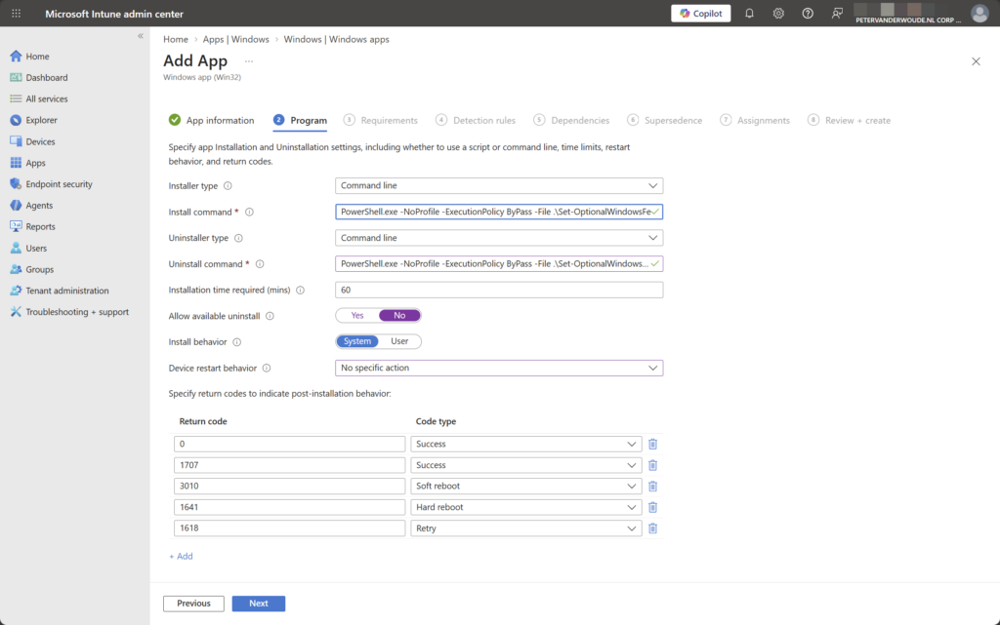
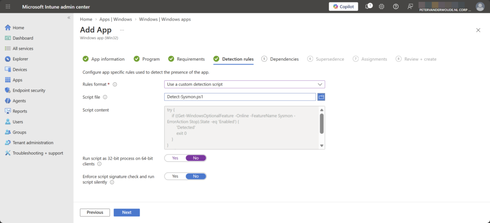
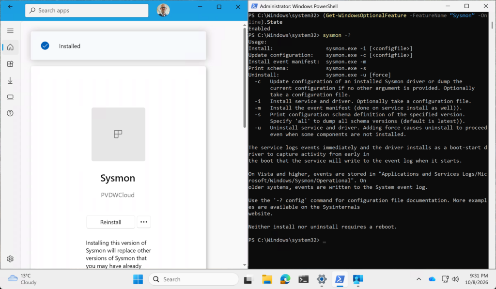

This week is all about Sysmon and about enabling Sysmon on the latest version of Windows 11. Sysmon itself is not new, but the direct integration within Windows 11 is. Starting in February 2026, Sysmon is available as a built-in optional Windows feature in supported versions of Windows 11. When the feature is enabled and Sysmon is installed, Sysmon remains active after system restarts and continuously monitors system activity, logging detailed events to the event log. Those events include information about process creation, network connections, and changes to file timestamps. That provides an additional layer of visibility into what is happening on Windows devices and supports detecting malicious or unusual behaviour. Sysmon generates the events, but it does notanalysee them. It simply adds deep insights when they are needed. This post will provide a closer look at enabling and configuring Sysmon using the new optional Windows feature, followed by a brief look at the resulting configuration.
Enabling Sysmon using PowerShell and Win32 apps
When enabling and configuring Sysmon, it starts with the ability to use optional Windows features, as Sysmon is disabled by default. Sysmon can be enabled directly through the Windows optional features interface. After a restart, it becomes active and starts logging detailed events. The easiest and most controlled way to enable Sysmon with Microsoft Intune is to use a PowerShell script and deploy it as a Win32 app.
Creating the PowerShell script to enable or disable Sysmon
The first step is verifying the current state of Sysmon. Well, technically speaking, this is not really necessary, as that can also be achieved within the detection of the Win32 app. Either way, verifying the state of Sysmon is a good starting point and can be achieved using the following snippet.
(Get-WindowsOptionalFeature -FeatureName “Sysmon” -Online).StateThe next step is enabling Sysmon. The following snippet shows how to easily enable the optional Windows feature for Sysmon.
Enable-WindowsOptionalFeature -Online -FeatureName “Sysmon” -NoRestartThe script should also support disabling Sysmon. That provides an easy way to use a single script in the Win32 app. The following snippet shows how to disable the optional Windows feature for Sysmon.
Disable-WindowsOptionalFeature -Online -FeatureName “Sysmon” -NoRestartCombine those lines into a single PowerShell script, add basic error handling, and it’s ready for enabling Sysmon. A complete working example can be found here: Set-OptionalWindowsFeature.ps1. Enabling the optional feature does not, by itself, complete the Sysmon installation. That still requires installation and configuration. That can be achieved by using the command line as shown in the snippet below, optionally combined with a configuration file. For that, simply specify the location of the XML configuration file during the installation.
sysmon –iNote: The uninstall of Sysmon can be achieved by simply using sysmon -u.
Wrapping the PowerShell script to enable or disable Sysmon
Before being able to enable Sysmon using the PowerShell script as a Win32 application, it is required to wrap the PowerShell script. For that specificpurpose,e Microsoft provides the Microsoft Win32 Content Prep Tool. The script will be wrapped into a file of the .intunewin format. Like with any other Win32 application, that file can be used in Microsoft Intune. The following five steps walk through downloading and using the Win32 Content PrepTool, to actually wrap the created script file.
- Download the Microsoft Win32 Content Prep Tool to C:\Temp
- Add the created PowerShell script to C:\Temp\OWF
- Open a Terminal using Run as administrator and navigate to the location ofIntuneWinAppUtil.exee using cd \Temp
- Run IntuneWinAppUtil.exe to start the wrapping process and provide the following information, when requested:
- Please specify the source folder: C:\Temp\OWF
- Please specify the setup file: Set-OptionalWindowsFeature.ps1
- Please specify the output folder: C:\Temp
- Do you want to specify catalog folder (Y/N): N
- Once the wrapping isdone,e the message Done!!! will be shown and a file named Set-OptionalWindowsFeature.intunewin will be created in C:\Temp
Creating the Win32 application that includes the Sysmon enablement
The wrapped PowerShell script can now be added as a Win32 application. That is a pretty straightforward process that is similar to adding any other Win32 application and can be achieved by adding an application of the Windows app (Win32) type. The following 12 steps walk through the steps to create the Win32 application by adding the created .intunewin file. As part of thosesteps,s a detection script is added that verifies the state of Sysmon.
- Open the Microsoft Intune admincentrer portal and navigate Apps >Windows.s
- On the Windows | Windows apps page, clickCreate.e
- On the Select app type pane, select Windows app (Win32) and clickSelect.t
- On the App information page, select the created Set-OptionalWindowsFeature.intunewin and clickOK.K
- Back on the App information page, specify the basic information about the PowerShell script and clickNext.t
- On the Program page, as shown below in Figure 1, specify at least the following information about the PowerShell script and clickNext.t
- Install command: Specify PowerShell.exe -NoProfile -ExecutionPolicy ByPass -File .\Set-OptionalWindowsFeature.ps1 -optionalWindowsFeatureAction Enable as the installation command to make sure that the PowerShell script will berun.n
- Uninstall command: Specify PowerShell.exe -NoProfile -ExecutionPolicy ByPass -File .\Set-OptionalWindowsFeature.ps1 -optionalWindowsFeatureAction Disable as the uninstall command to make sure that the PowerShell script will berun.n
- Installbehaviourr: Select System to make sure that the PowerShell script will run in the right context


- On the Requirements page, specify at least the operating system details and clickNext.t
- On the Detection rules page, as shown below in Figure 2, specify a simple script that does the detection of a successful installation by checking the state of the optional Windows feature and click Next


- On the Dependencies page, no configuration is required and clickNext.t
- On the Supersedence page, no configuration is required and clickNext.t
- On the Assignments page, configure the assignment for the enablement of Sysmon and clickNext.t
- On the Review + create page, verify the configuration and clickCreate.e
Note: This configuration provides a straightforward example of enabling Sysmon using a Win32 app. It is also possible to extend the PowerShell script with the functionality to also actually install and configure Sysmon.
Experiencing Sysmon in Windows 11
Once Sysmon is enabled, verifying the configuration is straightforward. That makes the actual installation, configuration and usage available via the command line. That is also what is shown below in Figure 3. Asuccessfull enablement of the Sysmon feature is shown in the Company Portal app, while the enablement is verified in PowerShell. Besides that, it also provides an overview of the options for actually installing and configuring Sysmon.


Once Sysmon is installed and configured, it starts capturing detailed system activity that helps identify unusual or potentially maliciousbehaviourr. That includes process creation, network connections, and changes to file timestamps. All of that information is written to the Event Viewer under Applications and Services Logs > Microsoft > Windows > Sysmon.
More information
For more information about Sysmon in Windows 11, refer to the following docs.
Discover more from All about Microsoft Intune
Subscribe to get the latest posts sent to your email.